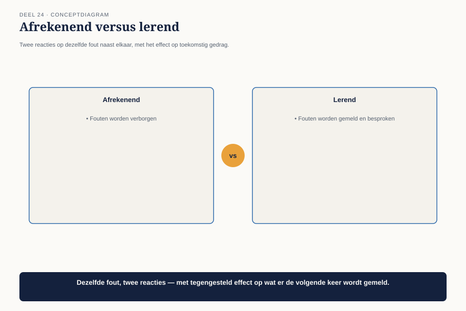
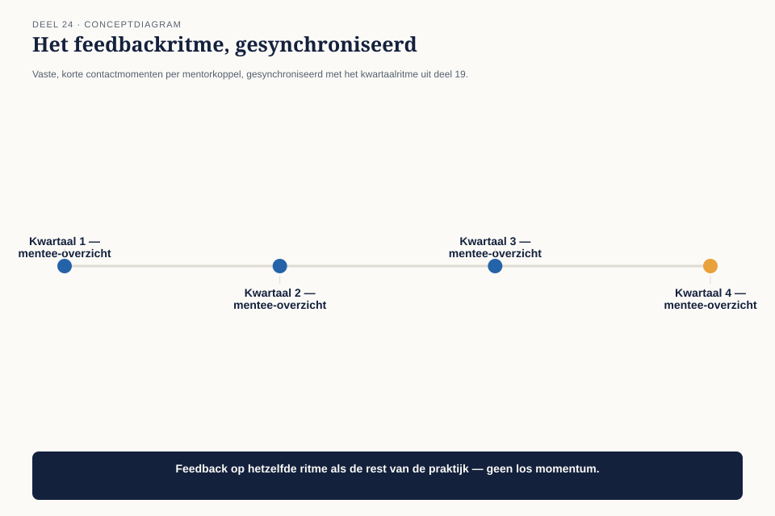

Deel 24 — Mentoring en ontwikkeling
Slidedeck · Ductus-cursus BTABoK · Niveau 3 · deel 24 van 30 · 22 slides
Slide 1 — Titel: Mentoring en ontwikkeling
Deel 24
Ductus
Slide 2 — Agenda: Vandaag
- De fout van een beginnend architect
- De mentorafspraak
- Fouten als leermateriaal, op praktijkschaal
- Een feedbackritme dat past bij de schaal
Slide 3 — Sectie: 1. De fout van een beginnend architect
Slide 4 — Figuur: Bijna identiek, drie maanden ertussen

Slide 5 — Bullets: Wat er echt gebeurde
- Geen introductietraject
- Niemand vertelde over het besluitenlogboek
- Geen mentor toegewezen
- Twee weken herbouw
Slide 6 — Statement: Geen onzorgvuldigheid
Een ontbrekende structuur
Slide 7 — Sectie: 2. De mentorafspraak
Slide 8 — Figuur: Vijf velden

Slide 9 — Tabel: De kern
| Veld | |
|---|---|
| Mentor/mentee | wie |
| Cadans | hoe vaak |
| Focus | welke competenties |
| Introductiepunten | eerste maand |
| Wat mag hier misgaan | veilige ruimte om te oefenen |
Slide 10 — Opdracht: Opdracht 1 — De mentorafspraak
20 minuten, individueel
Vijf velden, inclusief “wat mag hier misgaan”
Slide 11 — Sectie: 3. Fouten als leermateriaal
Slide 12 — Figuur: Afrekenend versus lerend

Slide 13 — Bullets: Claudette's keuze
- Fout niet individueel besproken
- Wel: een gezamenlijke sessie, zonder naam
- Systeemfout totdat het tegendeel blijkt
Slide 14 — Statement: Bij één architect: een probleem in één relatie
Bij acht tot tien: een systeemeigenschap
Slide 15 — Opdracht: Opdracht 2 — Systeemfout of persoonlijke tekortkoming
15 minuten, tweetallen
Eigen ervaring · wat had een systeemgerichte reactie opgeleverd?
Slide 16 — Sectie: 4. Een feedbackritme op schaal
Slide 17 — Figuur: De ritme-kalender

Slide 18 — Statement: Niet elk mentorkoppel apart plannen
Eén gedeeld kwartaalmoment, geen aparte afspraak
Slide 19 — Opdracht: Opdracht 3 — Het feedbackritme
15 minuten, individueel
Aan welk bestaand ritme koppel je het?
Slide 20 — Opdracht: Opdracht 4 — Het introductietraject
20 minuten, groepen van 3-4
Vijf punten voor de eerste maand · gebeurt het consistent?
Slide 21 — Bullets: Terug naar de beginnend architect
- Drie maanden later: eerste zelfstandige ontwerp
- Besluitenlogboek geraadpleegd, patroon gevonden
- Precies het groeicriterium uit de praktijkladder
Slide 22 — Titel: Volgende keer
Deel 25 — Community of practice
Acht tot tien architecten dreigen uiteen te groeien tot losse eilandjes.